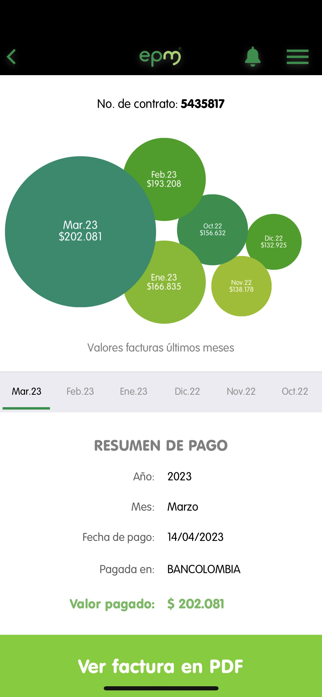

By: Laura Ospina Vanegas

Linear regression: kWh vs Month
This second part of the project must be done individual. For each plot, we
show evidence about our bill house public services to proof the information.
About the observed behavior
According to the collected data from the plot, explain why the graphic
displays that behavior in terms of:
-
The graphic, through the blue dots, shows the increase and decrease of
energy expenditure in my home, which has been increasing from November to
March, except for December, when it decreased by 4 kWh compared to the first
month considered.
-
The difference between the colors is that the blue ones show the actual
consumption data, while the gray ones show the relationship between all the
points and an approximation of how they are linearly ascending.
-
According to Use Latex formula y=5.50*6+95.50 the energy that we are gonna
consume in the next month is 128.5 whz $$ y = 5.50 \cdot 6 + 95.50 $$ $$ y =
128.5 $$
-
In conclusion, the consumption of electricity in my home should remain
constant or decrease considerably and not increase every month, as it will
not only benefit my family's economy, also the environment.
Linear regression: Residents vs kWh
About the observed behavior
According to the collected data from the plot, explain why the graphic
displays that behavior in terms of:
-
In the graph, the true consumption is very dispersed because the blue dots
are observed only in 3 and 4 residents with different amounts of
consumption, however, the regression is positive.
-
The energy expenditure is very dispersed in terms of the relationship
between residents and kWh as some data shows that there are places with 3
residents with a higher consumption than other homes with 4 or more
residents.
-
According to Use Latex formula y=22.75*200+61.25 the energy that 200 people
are gonna consume in the next month is 4611.25 whz $$ y = 22.75 \cdot 200 +
61.25 $$ $$ y = 4611.25 $$
-
In conclusion, the relationship between dispersed variables is due to the
different care that each house has, since it does not really matter how many
residents live there, but rather the bad or good use that is given to it.